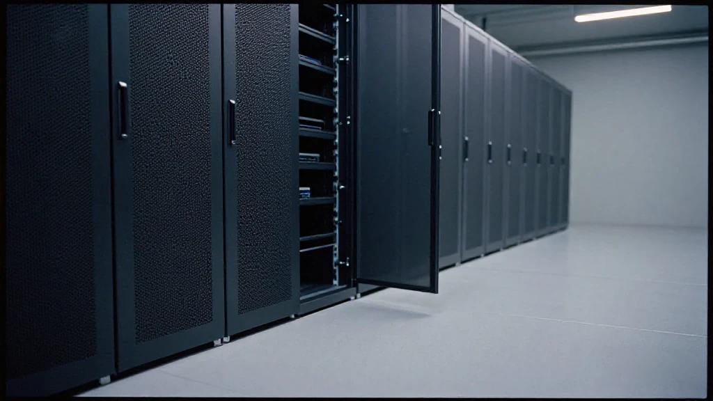

圖片由 AI輔助創作（Z-Image-Turbo）Image by AI (Z-Image-Turbo)
【鄭哥點評】
10月18日，我喺今日頭條睇到一篇講深圳 B300 市場嘅分析，題目叫《徹底看不懂！深圳B300市場嚴重失真，9成真實成交全是水下盤》。我睇咗兩次。
先講清楚一件事：呢篇唔係我一手調研嘅結果。我冇逐個盤去核貨權，亦冇能力核。我睇到嘅，係一篇行內人寫嘅市場分析；我能夠做嘅，係用自己喺算力硬件呢行嘅經驗，判斷佢邊幾句企得住、邊幾句要打折。
呢篇講法我同意一部分。下面我逐段講我點睇。文中嘅數字同判斷，我一律寫明係「據該篇分析」——唔會當成我自己核實過嘅事實。
核心結論：公開價同真實成交，係兩條軌
圖片由 AI輔助創作（Z-Image-Turbo）Image by AI (Z-Image-Turbo)
該篇分析嘅核心結論係：而家深圳 B300 高端市場，已經形成明顯嘅雙軌分化。
一條軌係公開流通市場——以引流單、遠期空單、期貨掛單為主，紙面價格好吸引。
另一條軌係私密交割市場——聚集咗國企項目、智算中心嘅剛需、頭部集成商嘅鎖貨大單，真實成交價一直企得穩。
然後係最重嗰句。據該篇分析講，超九成嘅大額實單，基本上都係水下閉環交易。
文中嘅講法係咁：頭部源頭渠道、長期合作資方、大型集成商嘅鎖貨動作，唔會喺公開社群詢價公示；佢哋提前鎖定貨源、私下對接需求、閉環完成交割，所有合規可落地嘅現貨資源，大多沉澱喺核心行業圈層裡面。
文中仲有一句：普通渠道、中小居間接觸得到嘅公開貨源，不足市場真實存量嘅一成。
呢兩句係該篇分析嘅判斷，唔係我核實過嘅數字。我冇方法驗證「九成」同「一成」——水下交易本身就係唔公開，任何人話自己數得清，都要問佢點數。但我同意佢講嘅方向：呢個市場嘅公開報價，同真實成交，已經係兩件事。
為何低價遍地，真正落地就一機難求
圖片由 AI輔助創作（Z-Image-Turbo）Image by AI (Z-Image-Turbo)
該篇分析跟住解釋，點解網上平價遍地，真係要落地就一機難求。文中把市面上絕大多數低價掛單，歸成三類落地短板。
第一類，冇真實貨權嘅居間空單、遠期期貨。賣方手上有嘅係一個價，唔係一批貨。
第二類，配置殘缺、鏈路唔完整、無法合規上機嘅瑕疵貨源。價錢平，係因為佢本來就上唔到機。
第三類，純粹引流、用嚟收諮詢嘅虛擬報價。個價嘅作用係令你打過去，唔係令你買得到。
文中嘅講法係：呢類低價單睇落好誘人，但一推到貨權核驗、合同簽署、對公結算、機房落地呢幾步，基本上都會斷。
反過來，文中話市場稀缺嘅優質現貨——可溯源、可開票、現貨現提、可以即刻合規上機嘅 B300——價格走勢一直堅挺，冇出現網上傳嘅大幅回落。
呢一段我同意得最多。我做電子同算力硬件咁多年，有一條規律未變過：一個報價嘅殺傷力，同佢能唔能夠交付，成反比。越係唔準備交付嘅人，越敢報低價，因為佢唔需要為成交負責。
市場三類從業者
圖片由 AI輔助創作（Z-Image-Turbo）Image by AI (Z-Image-Turbo)
文中把從業者分三類。呢個分法我覺得粗，但唔算錯。
第一類，核心圈層從業者。手上有源頭現貨資源，只對接真實剛需實單，唔參加公開低價內卷，穩定食住行業真實嗰份紅利。
第二類，中層跟風從業者。靠社群傳言同紙面虛價判斷行情，資訊永遠滯後半步，大部分時間消耗喺無效對接，好難落到優質訂單。
第三類，底層散戶從業者。容易被網絡虛盤嘅節奏帶走，睇唔明市場分層嘅邏輯，分唔清貨源好壞，頻繁踏空，長期處於認知上嘅被動。
我補一句：呢三類唔似三種人，更似三個位置。同一批貨、同一個客，你站嘅位唔同，就屬於唔同嘅一類。所以真正要問嘅唔係「我係邊類人」，而係「我而家企喺邊個位置，憑咩企喺度」。
判斷標準：睇邊個價，先唔會睇錯
圖片由 AI輔助創作（Z-Image-Turbo）Image by AI (Z-Image-Turbo)
文中嘅判斷標準其實好簡單：市場真實成交價，唔參考零散嘅最低掛單。
唯一有效嘅參考，係有真實資金入賬、有正規開票記錄、有實際集群落地佐證嘅實單價格。文中話，呢個亦係政企同大型 AI 項目採購嘅核心判斷標準。
呢句我照單全收。我做外貿做到今日，報價同成交價之間，永遠隔住一疊單：合同、發票、對公流水、驗收。冇呢疊單嘅價，係意見；有呢疊單嘅價，才係行情。
所以如果有人同你講「B300 而家跌到幾多幾多」，你可以問三句：單喺邊？發票開咗未？機櫃入咗邊個機房？三樣都答唔出，個價就唔係價。
鄭哥點評
圖片由 AI輔助創作（Z-Image-Turbo）Image by AI (Z-Image-Turbo)
價格篩選嘅唔止係貨源品質，仲係從業者嘅行業認知層級。
呢篇分析嘅視角，我覺得係真嘅。一線從業者嘅感受，同網上報價係完全脫節嘅：公開市場上見到嘅低價，大多係流轉性虛盤；真正落到地嘅貨源，早喺核心圈層裡面閉環消化完。
所以我把呢篇嘅結論，翻成三句對 B 端生意有用嘅講法。
一、搵 B300 供應商，唔好只睇網上掛價。要睇佢出唔出得正規發票、能唔能夠實地核驗貨權、可唔可以即刻上機行。
二、價錢低過行情太多嘅，大概率有落地短板。唔係佢想唔想交付嘅問題，係佢根本冇貨可以交付。
三、真正嘅優質供應商，唔打價格戰。佢靠圈層資源同交付能力食飯。
算力硬件呢門生意，拼嘅從來唔係報價高低，而係圈層資源、貨源層級、資訊差同落地交付能力。
最後講返一句：呢篇講法我同意一部分，唔係全部。「九成」「一成」呢類比例，我當佢係一個行內人嘅體感，唔當佢係統計。但佢指嘅方向——公開價同真實成交已經係兩件事——我認為係對嘅。做 B 端生意，最貴嘅從來唔係部機，係你信錯咗一個價。
資料來源：今日頭條《徹底看不懂！深圳B300市場嚴重失真，9成真實成交全是水下盤》，2026年10月18日。文中「超九成大額實單都係水下閉環交易」「普通渠道能接觸到嘅公開貨源不足一成」等講法，均為該篇分析嘅判斷；本文只作轉述同點評，該等數字未經本文獨立核實。
圖片由 AI輔助創作（Z-Image-Turbo）Image by AI (Z-Image-Turbo)
[Zheng Ge's Take]
On 18 October I read a market analysis on Toutiao about Shenzhen's B300 business, headlined "Can't Make Sense of It: Shenzhen's B300 Market Is Badly Distorted, and Nine in Ten Real Deals Are Underwater." I read it twice.
Let me be clear about what this is. It is not my own field research; I have not gone around verifying title to goods on any of these deals, and I would not be able to. What I read is a market analysis written by somebody inside the trade. What I can do is use my own years in compute hardware to judge which of its sentences hold up and which need a discount.
I agree with part of what it says. Below I go through it section by section. Where numbers appear, I say plainly that they are the analysis's, and I do not pass them off as facts I have checked myself.
The core conclusion: the public price and the real trade are two separate tracks
圖片由 AI輔助創作（Z-Image-Turbo）Image by AI (Z-Image-Turbo)
The analysis's core conclusion is that Shenzhen's high-end B300 market has already split into two clearly separate tracks.
One track is the public market. It runs on lead-generation offers, forward and futures listings, and paper prices that look very attractive.
The other track is private settlement. That is where state-owned-enterprise projects, the hard requirement of intelligent computing centres, and the bulk lock-ups of the major integrators sit, and there the real transaction price has stayed firm.
Then comes the heaviest line in the piece. According to the analysis, more than ninety per cent of large real orders are closed-loop underwater deals.
In the article's own words: the lock-up moves of the top source channels, the long-term capital partners and the large integrators are never posted for quotation in public groups. They secure the goods in advance, match demand privately and settle inside a closed loop, and almost all the compliant, deployable stock settles inside the core circle of the trade.
There is one more line: what ordinary channels and small brokers can reach in the open, is less than ten per cent of the market's real stock.
Those two sentences are the analysis's judgments, not numbers I have verified. I have no way to check "ninety per cent" or "ten per cent" — underwater dealing is by definition not public, and anyone who claims to have counted it should be asked how. But I agree with the direction: in this market the public quote and the real transaction have become two different things.
Why cheap offers are everywhere and a delivered machine is not
圖片由 AI輔助創作（Z-Image-Turbo）Image by AI (Z-Image-Turbo)
The analysis then explains why cheap prices are everywhere online while nothing can actually be delivered. It sorts almost all the low listings into three kinds of delivery defect.
The first is the broker's empty order and the forward contract with no real title to the goods. What the seller holds is a price, not a shipment.
The second is defective stock: incomplete configuration, an unfinished chain, a machine that cannot be legally racked. It is cheap because it was never going to run.
The third is the pure lead-generation quote, priced to start a conversation. The number exists to make you call, not to make you a buyer.
As the article puts it: these low offers look tempting, but push them to title verification, contract signature, corporate settlement and the machine room, and almost all of them stop there.
Conversely, the article says the scarce good stock — traceable, invoiceable, available for immediate collection, ready to be racked compliantly today — has held its price firmly, with none of the sharp fall that the internet keeps reporting.
This is the part I agree with most. In all my years in electronics and compute hardware one rule has never changed: the destructive power of a quote is in inverse proportion to its ability to deliver. The less a seller intends to deliver, the lower he dares to quote, because he does not have to answer for a closed deal.
The three kinds of people in this market
圖片由 AI輔助創作（Z-Image-Turbo）Image by AI (Z-Image-Turbo)
The article sorts the trade into three groups. The division is crude, but it is not wrong.
The first group is the core circle. They hold source stock, deal only in real requirement, stay out of the public price war, and steadily collect the real dividend of the trade.
The second group follows the crowd in the middle. They read the market off group rumours and paper prices, so their information is always half a step late, most of their time goes into matching that leads nowhere, and good orders rarely land.
The third group is the retail tail. They are easily carried along by the rhythm of the online paper market, cannot see the logic of the layers, cannot tell good stock from bad, miss the market repeatedly and stay on the back foot.
One thing I would add: these read less like three kinds of person than three positions. The same goods, the same buyer, and where you stand decides which group you are in. So the real question is not "which kind of person am I" but "where am I standing right now, and what entitles me to stand there".
How to judge a price
圖片由 AI輔助創作（Z-Image-Turbo）Image by AI (Z-Image-Turbo)
The article's test is simple: the real transaction price does not take its cue from the lowest scattered listing.
The only valid reference is the price of an order that has real money received, a proper invoice record and evidence of an actual cluster deployed. The article says this is also the core test used by government and enterprise buyers and by large AI projects.
I accept that without argument. After all these years in export, a quote and a transaction price are always separated by a stack of paper: contract, invoice, corporate bank record, acceptance. A price without that stack is an opinion; a price with it is the market.
So when somebody tells you "B300 has dropped to such and such", you can ask three questions: where is the order, has the invoice been issued, and which machine room did the rack go into? If none of the three can be answered, the number is not a price.
Zheng Ge's Take
圖片由 AI輔助創作（Z-Image-Turbo）Image by AI (Z-Image-Turbo)
Price filters not only the quality of the goods. It filters the level of understanding of the people in the trade.
The angle of this analysis feels true to me. What people on the front line feel and what the internet quotes are completely disconnected: most of the low prices visible in public are circulating paper offers, and the stock that can actually be delivered was digested inside the core circle long ago.
So I would turn its conclusion into three lines that are useful on the B2B side.
One: when you look for a B300 supplier, do not look only at the posted price. Look at whether they can issue a proper invoice, whether you can verify title to the goods on site, and whether the machine can run today.
Two: a price far below the market almost always has a delivery defect. It is not a question of whether the seller wants to deliver. He has nothing to deliver.
Three: a genuinely good supplier does not fight on price. He earns his living from circle resources and delivery capability.
In compute hardware the contest has never been about who quotes lower. It is about circle resources, the layer your stock comes from, information asymmetry and the ability to deliver.
One last thing. I agree with part of this, not all of it. Ratios like "ninety per cent" and "ten per cent" I take as one insider's sense of the market, not as statistics. But the direction it points in — that the public price and the real transaction are now two different things — I think is right. In B2B, the most expensive thing is never the machine. It is the price you believed.
Source: 今日頭條 (Toutiao), "Can't Make Sense of It: Shenzhen's B300 Market Is Badly Distorted, and Nine in Ten Real Deals Are Underwater", 18 October 2026. Statements quoted here — including that more than ninety per cent of large real orders are closed-loop underwater deals, and that public supply reachable through ordinary channels is under ten per cent of real stock — are that analysis's own claims, restated and commented on. None of those figures has been independently verified for this article.